先看，再说
查内存、进程、启动项、磁盘这类只读的事直接去做，回答里列出它看了哪些地方。
macOS 和 Windows 上的电脑管家。首页是一片水：水位是磁盘，浑浊是能清的垃圾，波浪快慢是 CPU，水温是内存压力。体检、清理、加速、隐私和一组顺手的小工具都在一个窗口里，删东西之前小獭一定先问你。
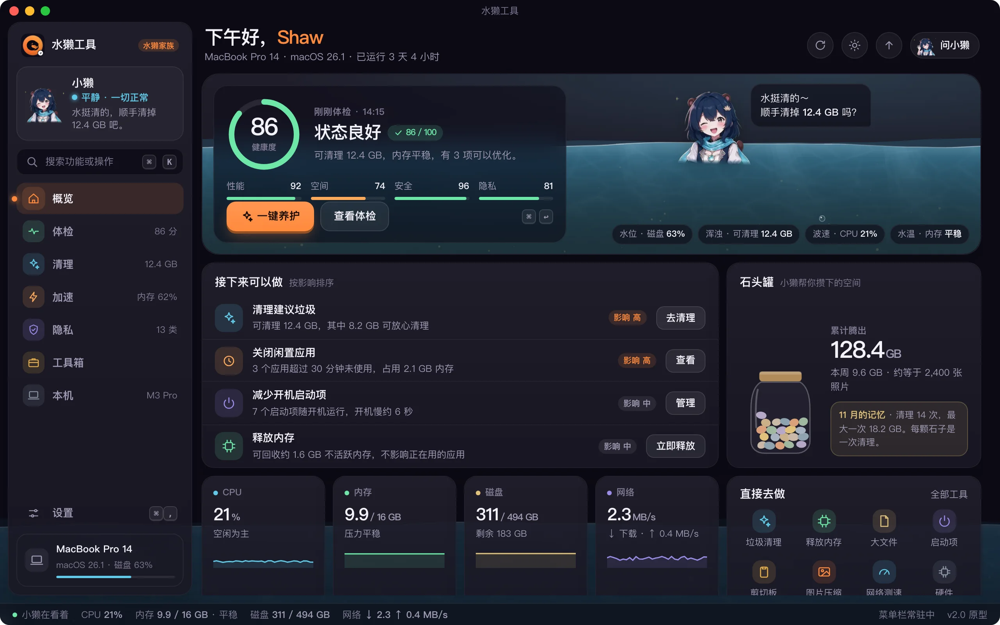
01 · 水面
首页的水面、小獭的表情、状态栏那一行字读的是同一份机器状态。往下滚动，本页的水也会跟着变。
健康分 86，内存平稳。「接下来可以做」按影响从大到小排好，最上面那条通常点一下就完事。
CPU 一高，水面的波浪就快起来，水色偏暖，小獭换成埋头干活的样子。只是忙不是坏事，它不会催你去关东西。
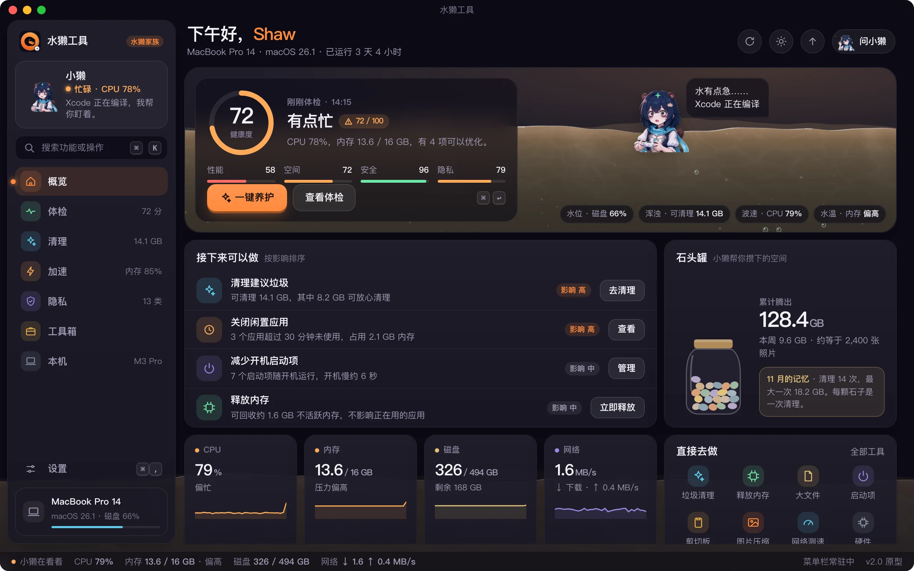
内存压力到了红线，水变红，首页的主按钮换成「释放内存」。只回收不活跃的缓存，不会关掉你正在用的应用。
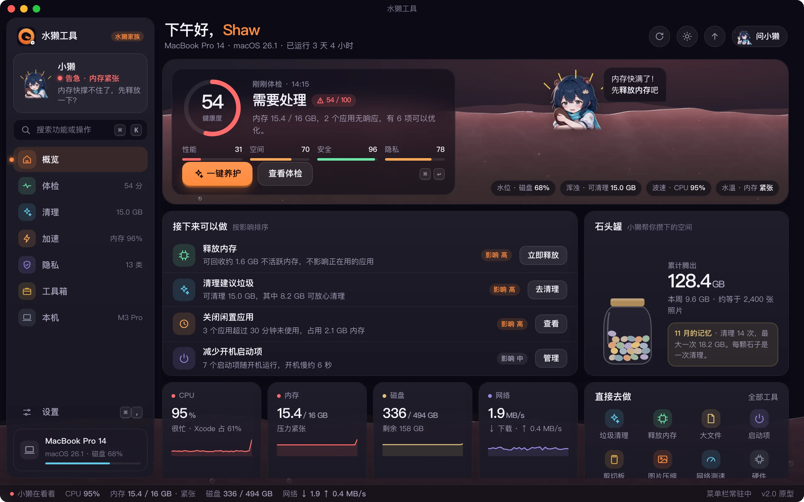
水位就是磁盘占用。快满的时候，小獭把能腾地方的大头列出来：垃圾、大文件、半年没开过的虚拟机，一项一项给你看。
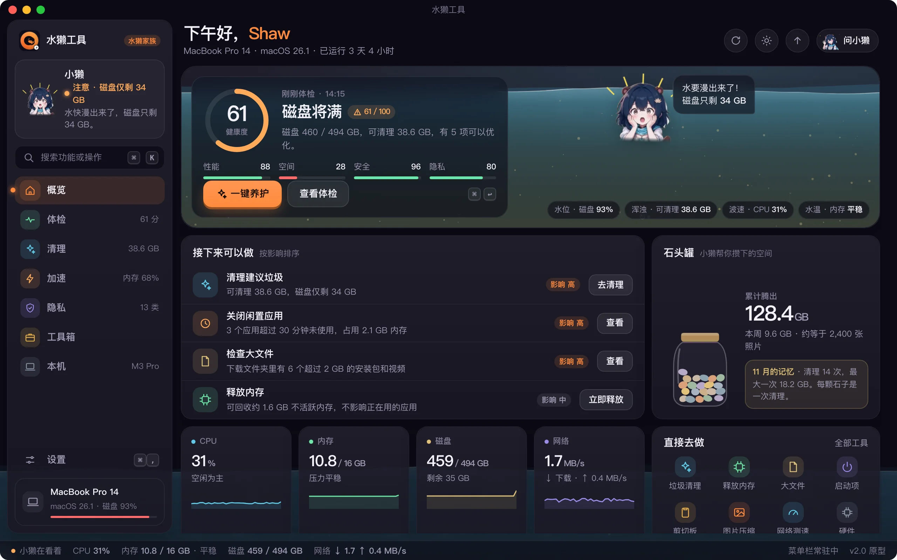
02 · 一键养护
首页那颗橙色按钮会依次清理缓存和日志、释放内存。做完原地告诉你腾出了多少，后悔了就点「撤销」。
清理缓存与日志 · 释放内存
文件都在废纸篓里 · 石头罐 +1，现在 22 颗
03 · 小獭助手
小獭在窗口右侧。问它「电脑为什么卡」「哪些文件可以删」，它先去看内存、进程和启动项，再用大白话告诉你原因。要结束进程、清理文件，先出一张确认卡。
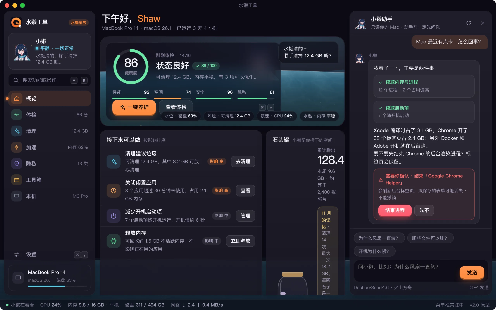
查内存、进程、启动项、磁盘这类只读的事直接去做，回答里列出它看了哪些地方。
结束进程、清理文件之前出一张确认卡，写清楚要做什么、有什么影响、能不能撤销。你点「先不」，它就不动。
「清理垃圾」「释放内存」「清空废纸篓」这类短指令在本机直接识别，不联网也能用。
填写接口地址、API Key 和模型名称，兼容 OpenAI 接口的服务都能用，比如火山方舟的豆包。
04 · 在线试用
下面是一个能操作的交互演示，界面和 App 2.0 一致，数据都是演示数据，不会读你的电脑。可以直接在窗口里点，也可以用右边的按钮切换场景。
提示：工具箱里的「擦屏幕」会让窗口变黑，按 Esc 或点一下就回来。手机上画面较小，建议在电脑上体验。
05 · 五个板块
扫描系统缓存、应用缓存、日志、Xcode 派生数据和旧安装包。只看不动，删之前先给你一张清单。
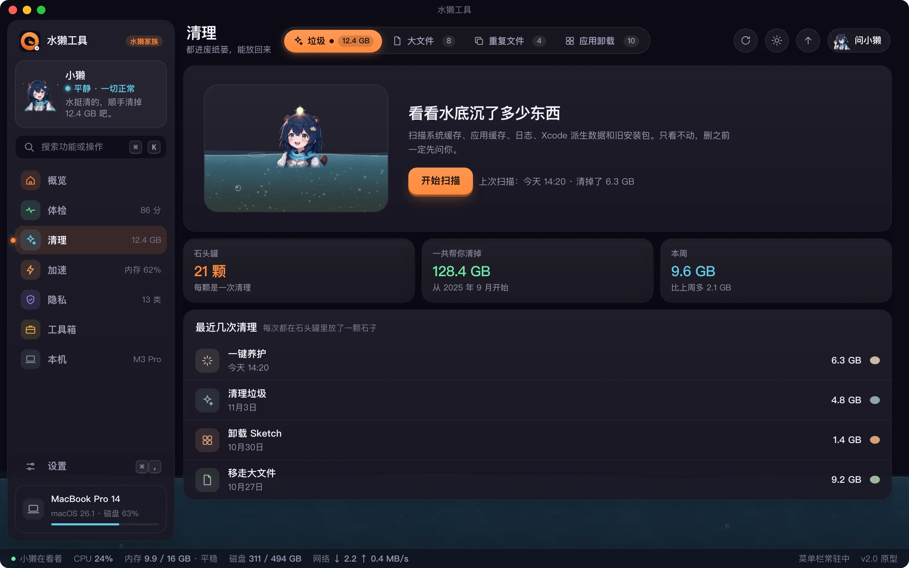
内存压力环、最近一分钟的曲线、占得最多的应用排成一列。「立即释放」只清不活跃的缓存，不会关掉任何应用。
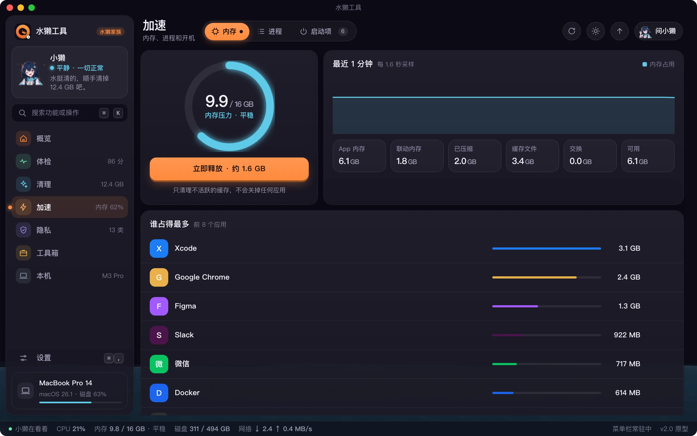
按类别列出完全磁盘访问、辅助功能、屏幕录制、摄像头、麦克风、定位等权限，谁拿到了、谁申请过没给，一目了然。
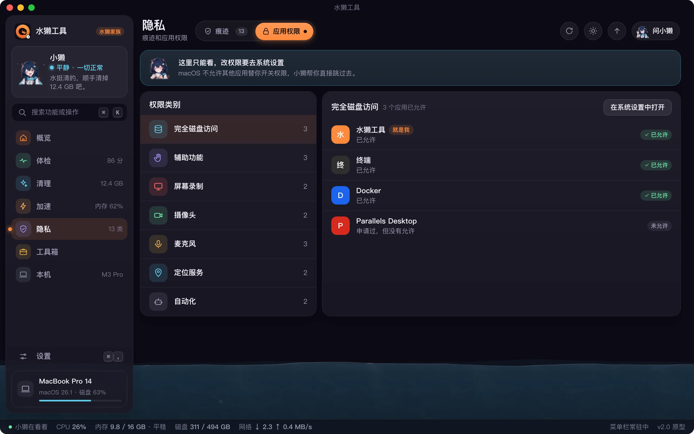
看剧睡着了到点自己睡，下载、开会时不让电脑睡，客人来了扫码连 Wi‑Fi，擦屏幕时先让屏幕变黑。都是一张卡片、一下点击。
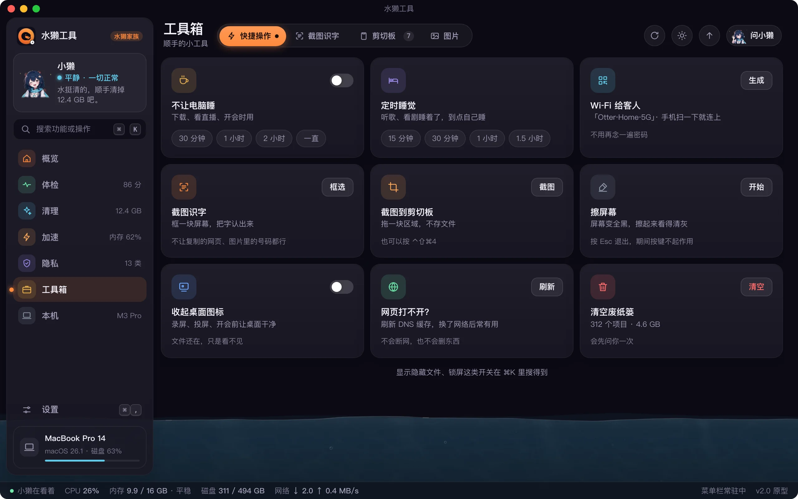
菜单栏里显示 CPU 或内存占用，点开就是小獭浮窗：一键养护、释放内存、清空废纸篓、刷新 DNS、防止休眠都在这儿，占内存最多的几个应用也列着。
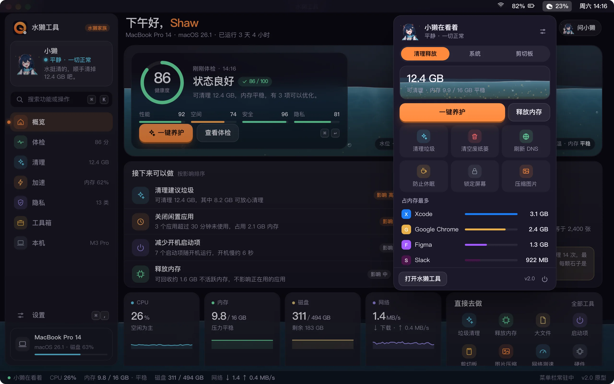
浅色 / 深色
跟随系统，或者手动指定，切换不用重启。小獭的问候也跟着早上、下午、晚上换。
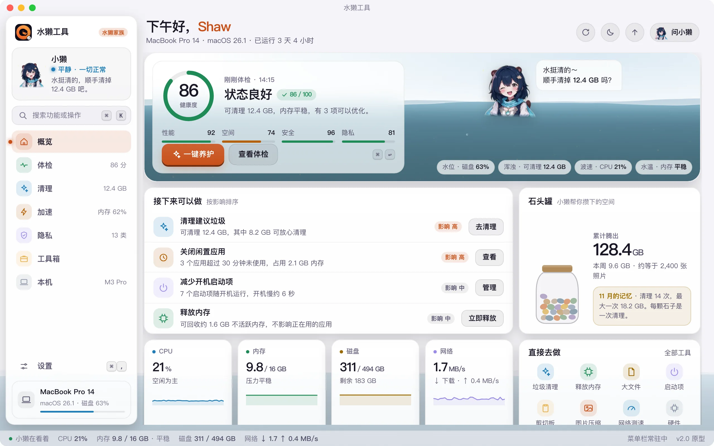
还有这些
框一块屏幕，把字认出来放进剪切板。识别在本机完成，截图不上传。
生成当前网络的二维码，手机扫一下就连上，不用再念一遍密码。
最近复制过的文字和图片都留着，点一下再复制一次。
拖进来批量压小，发消息、传网页不再超过大小限制。
健康度、循环次数、谁最耗电，笔记本用了几年心里有数。
磁盘按应用、开发者、文稿、系统数据分开，点一类直接去清理。
测一下网速，看 Wi‑Fi 信号；网页打不开时先刷新 DNS。
芯片、内存、序列号、保修状态，卖二手、报修前看一眼。
任何功能和开关都能用名字搜到，回车直接执行。
06 · 下载
macOS 12 及以上，Apple Silicon（M 系列芯片）
DMG 安装包，把「水獭工具」拖进「应用程序」即可。已签名、已通过 Apple 公证，首次打开不会被系统拦截。从 1.x 升级直接替换就行。
下载 macOS 版Windows 10（1809 及以上）/ 11，x64
安装包双击运行，会自动在桌面和开始菜单放好快捷方式；不想安装也可以用 免安装 zip 版。预览版尚未代码签名，SmartScreen 拦截时点「更多信息」，再点「仍要运行」。关掉窗口会收进托盘，右键托盘图标可以退出。
下载 Windows 预览版Intel 芯片的 Mac 暂不提供安装包。清理类功能需要「完全磁盘访问」权限，首次使用时小獭会带你去系统设置里打开。
安装包的 SHA256 见 Release 页。
07 · 常见问题
不用。没有内购、订阅或专业版。小獭使用的模型由你自己接入，费用直接和模型服务商结算，App 不经手。
清理、卸载、移走大文件都是移进废纸篓，30 天内可以放回来，结果页上也有「撤销」。清空废纸篓这种没法撤销的操作，会单独再问你一次。
不会。查看类的事情它直接做；结束进程、清理文件这类会改动电脑的操作，一定先出确认卡，你点了允许才执行。
扫描、清理、截图识字都在本机完成。没有配置模型时，小獭的短指令也在本机执行；配置了模型并和它对话时，对话内容和它读到的机器概况会发送到你填写的接口地址。
缓存、日志这些文件散在系统各处，没有这个权限只能看到一小部分，扫描结果会偏小。不给也能用，只是能清的东西少一些。
Windows 10 / 11（x64）提供预览版，体检、清理、加速、工具箱都能用，部分功能还在补齐，欢迎反馈。Intel 芯片的 Mac 暂不支持。
水獭住在水边，水清不清、水位高不高，它一看就知道。电脑也一样：不用读一堆百分比，看一眼水面就知道该不该管它。